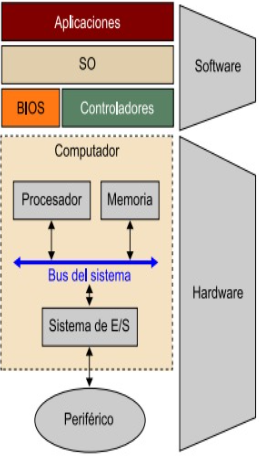

Para hacer una operación de E/S entre el computador y un periférico, es necesario conectar estos dispositivos
al computador y gestionar de manera efectiva la transferencia de datos. Para hacerlo, el computador dispone del
sistema de entrada/salida(E/S).
Este sistema de E/S es la interfaz que tiene el computador con el exterior y el objetivo que tiene es facilitar
las operaciones de E/S entre los periféricos y la memoria o los registros del procesador. Para gestionar las
operaciones de E/S es necesario un hardware y la ayuda de un software.

Dada la gran variedad de periféricos, es necesario dedicar un hardware y un software específicos para cada uno.
Por este motivo se ha intentado normalizar la interconexión de los periféricos y el computador mediante lo que
se denomina módulos de E/S o controladores de E/S. Eso nos permite tener, por una parte, una conexión, entre el
módulo de E/S y el periférico, específica y con unas características propias que difícilmente se pueden generalizar
para utilizarlas en otros dispositivos y, por otra parte, una conexión entre los módulos de E/S y el computador
común a todos los controladores, pero estos módulos, además de permitir la conexión de los periféricos al computador,
disponen de la lógica necesaria para tener cierta capacidad de procesamiento y gestionar las transferencias de información.